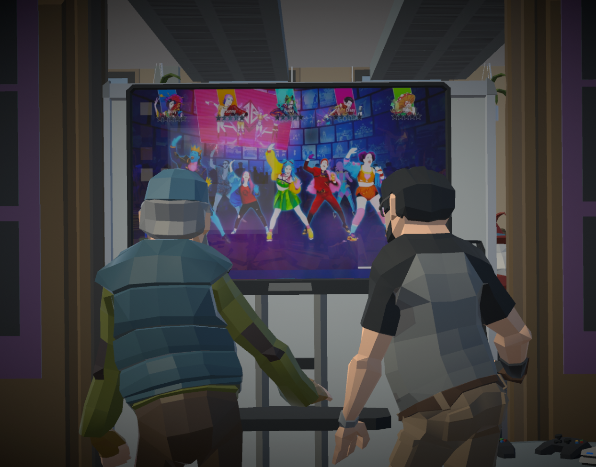
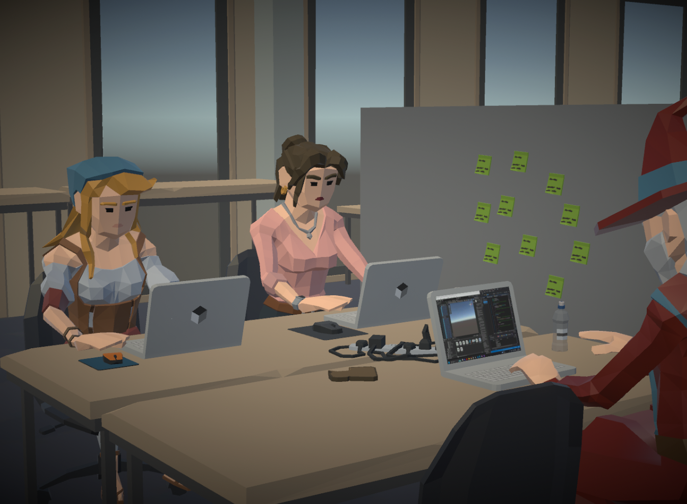
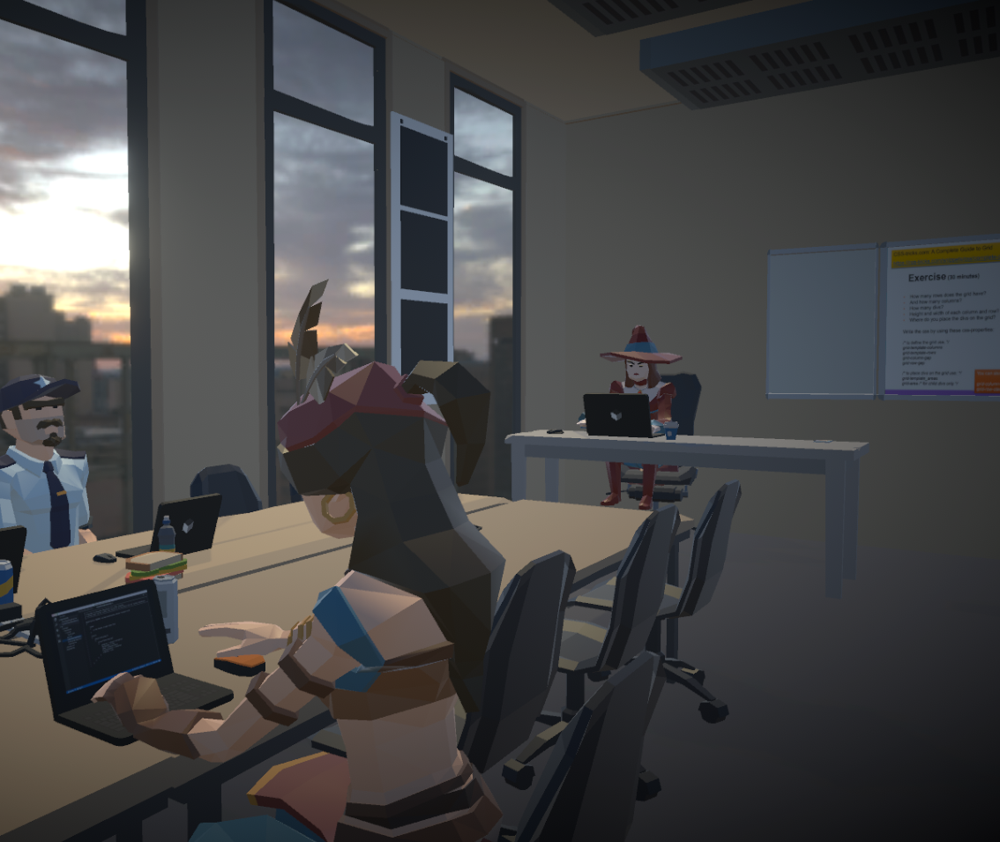

3D Game · Team Project · Unity
Project Classified is a 3D first-person game where you play as a student who also happens to be a prankster. Your goal is to find four clues throughout the school. Once you have found all the clues, you receive a picture of someone you need to prank using your water gun.
However, you need to be careful of the janitors. They patrol the school and can make your prank much more difficult.
This was a group project. I was mainly responsible for the technical gameplay systems and several environmental elements.
I am especially proud of how the different parts of the project came together visually. I worked on both the technical gameplay systems and the environment, which allowed me to see how programming and visual design can work together to create a complete game experience.
This project also helped me become more comfortable working with Unity's 3D systems, especially when combining player movement, shooting, raycasting, and visual effects.


